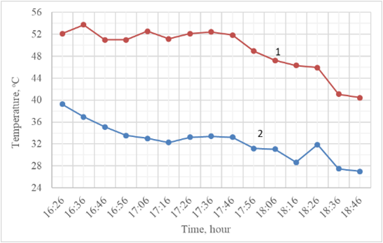

Շենքի հովացման բեռը նվազեցնելու համար առաջարկվում է նոր մեթոդ, որի սխեման ներկայացված է նկարում։

Խմելու ջուրը խնայելու համար համակարգում օգտագործվում է մանրախճով մաքրված անձրևաջուր։ (1) համարով նշված բաքից ջուրը (2) պոմպի օգնությամբ բարձր ճնշման տակ խողովակաշարով տրվում է փոշիացուցիչներին։ ջրի մանր մասնիկները կլանվում են արտաքին օդի կողմից , տեղի է ունենում ադիաբատ խոնավեցում և պատի սահմանային շերտի ջերմաստիճանը նվազում է։
Նկարում ներկայացված է պատող կոնստրուկցիայի մոտ սահմանային շերտի ձևավորման պրոցեսը՝ հաշվի առնելով արևային ճառագայթման ազդեցությունը
սահմանային շերտի ջերմաստիճանը (tУС1), (tУС2) արևային ճառագայթման ներգործության հաշվին ավելի բարձր է, քան արտաքին օդի ջերմաստիճանը։
սահմանային շերտի ջերմաստիճանը որոշվում է հետևյալ բանաձևերով.
առաջին բանաևով որոշվում է սահմանային շերտի ջերմաստիճանը առանց խոնավեցման , իսկ 2-րդ բանաձևով` խոնավեցման համակարգի դեպքում:
բանաձևերում`
tН – արտաքին օդի հաշվարկային ջերմաստիճան, °C,
tR – ճառագայթային ջերմաստիճան, °C,
tМ –թաց ջերմաչափի ջերմաստիճան, °C,
I – արևային ճառագայթման ինտենսիվություն, Վտ/մ2°C,
P – արևի ճառագայթման կլանման գոծակից (կախված է գույնից)
Н – պատից դեպի օդը ջերմափոխանցման գործակից, Վտ/մ2°C։
Թաց ջերմաչափի ջերմաստիճանը հեշտ և հարմար է որոշել I-d դիագրամի միջոցով։
Այս համակարգում կարևոր նշանակություն ունեն ոռոգվող ջրի քանակը, ինչպես նաև փոշիացուցիչների քանակն ու կոնստրուկտիվ բնութագրերը։
Ոռոգվող ջրի քանակը որոշվում է հետևյալ բանաձևով՝
որտեղ՝ m- ոռոգման գործակից, օդի ադիաբատ խոնավեցման ժամանակ ընդունվում է 0,7,
Gв- մշակվող օդի քանակություն։
Փոշիացուցիչների քանակությունը որոշվում է ելնելով ոռոգվող ջրի քանակությունից, հետևյալ արտահայտությամբ՝
Որտեղ՝ g- մեկ փոշիացուցիչի արտադրողականությունն է, կգ/վ: Բնութագրիչ պարամետրերի կախումը տրվում է արտադրողի կողմից գրաֆիկների և բանաձևերի տեսքով։
Հետազոտության արդյունքներ
Քանի որ մեթոդի օգնությամբ արեգակնային ճառագայթման ազդեցության պատճառով առաջացող հովացման բեռը փոքրանում է:
Աղյուսակում 1-ում ներկայացված են հորիզոնական մակերևույթների վրա արեգակնային ճառագայթման արժեքները Հայաստանի տարբեր քաղաքների համար։
Աղյուսակից երևում է, որ արևային ճառագայթման առավելագույն արժեքը հուլիս ամսին է:
Գրաֆիկներում ցույց է տրված օրվա ընթացքում ուղիղ և ցրված արևային ճա¬ռա¬գայթման գրաֆիկների փոփոխությունները 38о, 40о, 42о աշխարհագրական լայնու¬թյուն¬ներում հուլիսին՝ հարավային կողմնորոշում ունեցող հորիզոնական կոնստրուկ¬ցիա¬ների համար: Գրաֆիկներից երևում է, որ արևի ճառագայթումը առավելագույն արժեքներ ունի առավոտյան ժամը 10:00-ին և ցերեկը 15:00-ին, հարավային ուղղվածությամբ ուղղահայաց կոնստրուկցիաների համար, իսկ հորիզոնականների համար՝ 12:00-ից մինչև 13։00։
I-d դիագրամում ցույց է տրված արտաքին օդի 35°C հաստատուն ջերմաստիճանի դեպքում օդի վիճակի փոփոխման գործընթացները ադիաբատ խոնավացման ժամանակ: սահմանային շերտի ջերմաստիճանը հասնում է 49°C, իսկ հարաբերական խոնավությունը ընդունում ենք ՝ 20%, 30%, 50%:Դիագրամից երևում է, որ չոր կլիմայական պայմաններում սահմանային շերտի ջերմաստի¬ճանային տարբերությունը ավելի մեծ է, քան խոնավ պարամետրերով արտաքին օդի դեպքում:
Հետևաբար, թաց ջերմաչափի ջերմաստիճանը կախված է բազմաթիվ գործոններից, ինչպիսիք են բարոմետրական ճնշումը, արտաքին օդի ջերմաստիճանը և հարաբերական խոնավությունը: Աղյուսակ 2-ում ներկայացված են վերը նշված պարամետրերը Հայաստանի տարբեր քաղաքների համար: Աղյուսակի վերլուծությունը ցույց է տալիս, որ արտաքին օդի խոնավեցման նոր մեթոդը օգնում է նվազեցնել ջերմային թափանցումները դեպի շինություն, քանի որ սահմանային շերտի ջերմաստիճանային տարբերությունը խոնավեցումով և առանց խոնավացման 5°C -ից մինչև 12°C է:
Գրաֆիկում ներկայացված է թաց ջերմաչափի ջերմաստիճանի գրաֆիկական կախվածությունը հարաբերական խոնավությունից արտաքին օդի ջերմաստիճանի տարբեր արժեքների դեպքում Երևան քաղաքի համար (91000 Պա)
Գրաֆիկից երևում է, որ որքան բարձր են հարաբերական խոնավության արժեքները, այնքան բարձր է թաց ջերմաչափի ջերմաստիճանը, քանի որ օդը հագեցած է ջրային գոլորշիներով: Բացի այդ, որքան ցածր է թաց ջերմաչափի ջերմաստիճանը, այնքան ավելի արդյունավետ է առաջարկվող մեթոդը, քանի որ օդի և ջրի միջև ջերմափոխանակությունը ավելի ինտենսիվ է: Բացի այդ, թաց ջերմաչափի նվազագույն և առավելագույն արժեքների միջև ջերմաստիճանային տարբերությունը արտաքին օդի 20°C ջերմաստիճանում կազմում է 12°C, իսկ 40°C -ում՝ 21°C:
Առաջարկվող նոր մեթոդի փորձարարական արդյունքներ
Գյումրի քաղաքում՝ պատի հարավային կողմում, տեղադրվել է փոշիացնող համակարգ, ինչպես նաև երկու տվիչ (HOBO), սահմանային շերտի ջերմաստիճանն առանց արտաքին օդի խոնավացման և խոնավացման եղանակով չափելու համար։
Օգոստոսի չափումների արդյունքները ներկայացված են գրաֆիկի տեսքով

Գրաֆիկից երևում է, որ սահմանային շերտի խոնավեցմամբ տարբերակի համեմատ ` առանց խոնավեցման տարբերակում օդի ջերմաստիճանը միջինում 12°C -ով բարձր է ։
Փորձի արդյունքները ցույց են տվել, որ ադիաբատ խոնավեցման նոր մեթոդի կիրառման ժամանակ ներսի օդի ջերմաստիճանը նվազել է 3-4 °C-ով, ինչը հանգեցնում է շենքի հովացման բեռի նվազմանը։
Տեխնիկատնտեսական
Այս մեթոդի հիմնավորման համար հաշվարկներ են կատարվել երկհարկանի տան համար խոնավեցմամբ և առանց դրա։ Կոնստրուկցիայի ջերմատեխնի-կական բնութագրերն են՝ պատ – 0,9Վտ/(մ2°C), հատակ – 0,46Վտ/(մ2°C), առաս-տաղ – 0,92Վտ/(մ2°C), դուռ – 4,7Վտ/(մ2°C), պատուհան – 2,9Վտ/(մ2°C), արտաքին օդի հաշվարկային ջերմաստիճան - 35°C (ք․ Երևան)։ Պատերի գումարային մակերես – 197մ2, պատուհաններ - 55 մ2, դռներ - 8մ2, հատակ և առաստաղ – 83,7 մ2, շինության ընդհանուր ծավալ – 502մ3։ Համեմատական վերլուծությունը ցույց է տվել, որ առաջարկվող ադիաբատ խոնավեցման մեթոդը 20%-ով նվազեցնում է շենքերի հովացման բեռը։
Շենքի հովացման բեռը իրենից ներկայացնում է արտաքին կոնստրուկցիաներից ջերմային թափանցումների և ներքին ջերմանջատումների գումար, այն որոշվում է հետևյալ բանաձևով՝
որտեղ արտաքին կոնստրուկցիաներից ջերմային թափանցումների գումարային արժեքը որոշվում է հետևյալ բանաձևով՝
Պատուհաններից ջերմային թափանցումների հաշվարկում արևի ճառագայթման ազդեցությունը պետք է հաշվի առնվեն միայն հարավային կողմնորոշում ունեցող պատուհանների համար, քանի որ արևային ճառագայթման ազդեցությունը տևում է ավելի երկար, քան շենքի մյուս կողմերի համար: ջերմային թափանցումների ընդհանուր արժեքը հաշվարկվում է հետևյալ բանաձևով՝
Հարավային պատուհանից արևի ուղիղ ճառագայթման միջոցով ջերմային թափանցումները որոշվում են հետևյալ բանաձևով
I – արևի ճառագայթման ինտենսիվությունն է հարավային մակերևույթին, Վտ/մ2,
Fок. – պատուհանի մակերես, մ2,
n1=0.8 – ապակու մակերեսից արևի ճառագայթի արտացոլման գործակից,
n2=0.8 – գործակից, որը հաշվի է առնում ապակու մակերեսի վրա
աղտոտվածության և փոշու հետևանքով ճառագայթների ներթափանցման նվազումը,
n3=0.8 – գործակից, որը հաշվի է առնում շրջանակների պատճառով ապակեպատ
մակերեսի կրճատումը,
=0.6-0.8 – վարագույրների ազդեցության գործակից։
արտաքին և ներքին օդերի (tН - tВ)ջերմաստիճանային տարբերության հաշվին տեղի ունեցող Ջերմային թափանցումները որոշվում են ջերմափոխանցման բանաձևով՝
կատարել հաժվարկ երկու տարբեիակով , համեմատել արդյունքները
Օգտվելով ՀՀՇՆ II-7.01-2011 «ՇԻՆԱՐԱՐԱԿԱՆ ԿԼԻՄԱՅԱԲԱՆՈՒԹՅՈՒՆ» նորմից
կատարվել է հետազոտություն և քարտեզի վրա տարբեր պայմանական նշաններով նշվել են չոր գոտիում գտնվող այն քաղաքները, որտեղ արդյունավետ կլինի վերը նշված համակարգի օգտագործումը։
Եզրակացություն։
- Արտաքին օդի խոնավացման մեթոդը օգնում է նվազեցնել շինության ջերմային թափանցումները, քանի որ սահմանային շերտի ջերմաստիճանային տարբե-րությունը խոնավեցումով և առանց խոնավեցման տատանվում է 5°C -ից մինչև 12°C, կախված մթնոլորտային ճնշումից և արտաքին օդի պարամետրերից:
- Ադիաբատ խոնավեցման այս մեթոդը նպատակահարմար է օգտագործել չոր կլիմայական շրջաններում, քանի որ թաց ջերմաչափի ջերմաստիճանն ավելի ցածր է, քան խոնավ պայմաններում:
- Ադիաբատ խոնավեցմամբ հովացումը նվազեցնում է շենքերի հովացման բեռը 20%-ով, ինչը օգնում է ոչ միայն նվազեցնել էներգիայի սպառումը, այլ նաև նվազեցնել արտանետումները դեպի մթնոլորտ: